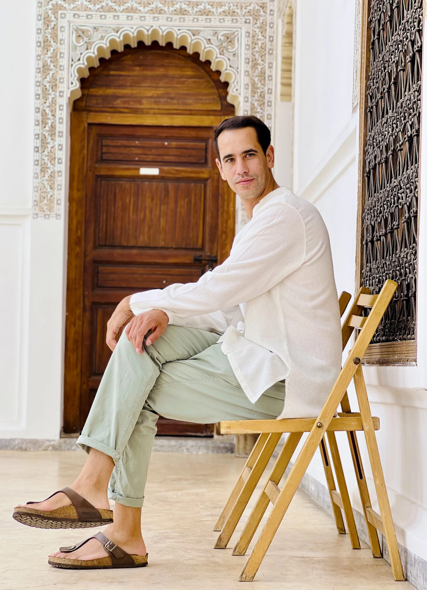
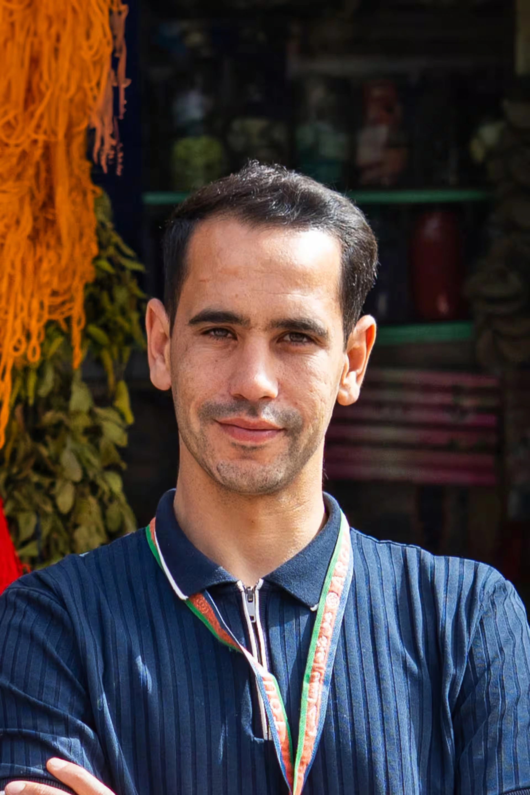

I was born in 1993 into an Amazigh family with roots in the Beni Ouarain tribe, in a small village in the northern Middle Atlas Mountains. My family moved to Marrakech when I was three, and this city has been home ever since.
I grew up near the Menara Gardens, one of Marrakech's most visited landmarks. From an early age, I was surrounded by travellers from all over the world, long before I even understood what a tourist was. Looking back, I think that's where my journey in tourism really began.
I properly entered the tourism industry in 2016, working with local travel agencies in sales and logistics. In 2018, I earned my professional tour guide licence from Morocco's Ministry of Tourism. After nearly a year guiding visitors around Marrakech, I joined G Adventures, a Canadian travel company, as a tour leader, accompanying groups on multi-day journeys across Morocco. After Covid, I returned to Marrakech as a local guide, bringing with me years of experience, knowledge and stories gathered along the way.
The Secret Marrakech began as an idea in late 2019, when I created an Airbnb Experience called "Discover the Secret Marrakech". The idea was to take visitors beyond the usual tourist routes and introduce them to the everyday places that make this city what it is — neighbourhood bakeries, traditional hammams, local food markets and the streets where daily life unfolds.
In 2026, I decided to turn that original idea into something bigger: The Secret Marrakech, a local tour business built around sharing the city I grew up in and love.
What matters most to me is showing you the Marrakech I actually live in. I still get genuine joy from watching someone's face light up as they see fresh bread coming out of a neighbourhood oven or step into a beautiful courtyard they might otherwise have walked straight past.
As a licensed local tour guide in Marrakech, I believe every visitor deserves an experience that feels personal. Whether you're travelling with family, as a couple, on your own or in a small group, I adapt our time together to your interests and curiosity. And if you have something in mind that isn't listed among my tours, just ask. Chances are, we can make it happen.
Browse the tours, or message me directly and tell me what you're curious about.